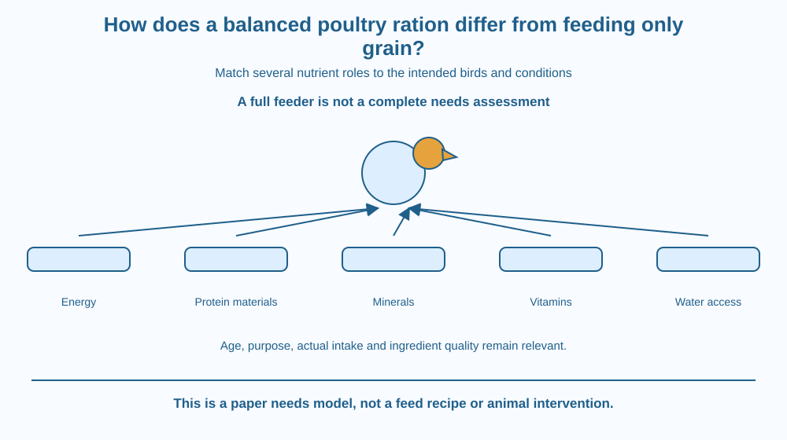

Explain why feeding poultry only grain can fail to meet all nutritional needs. Distinguish energy supply, protein-building materials and minerals or vitamins. Evaluate a ration by the bird's stage and purpose without creating a home feeding recipe or conducting an animal trial.
A bird can receive plenty of grain yet still have a diet that is not appropriately balanced. Filling a feeder and supplying enough total food are not the same as meeting every nutritional requirement.
Different components support different functions, and their useful proportions depend on the animal. A young growing bird and a laying bird need not have identical demands.
The question is not whether grain is always useless or whether one extra ingredient fixes everything. It is how the complete ration relates to the identified bird's needs and management conditions.
A ration is the feed supplied over a relevant period, considered in relation to the animal's requirements. A balanced ration provides suitable nutrients in appropriate amounts and relationships for the intended population and conditions.
Grains can contribute substantial dietary energy and other nutrients, but their composition does not automatically match every poultry requirement. A single broad ingredient category is not a complete nutritional specification.
Protein supplies amino-acid building materials needed for growth and maintenance. The quality and balance of these materials matter, not merely a label saying some protein is present. This lesson does not repeat digestion or the molecular process of protein synthesis.
Minerals and vitamins support functions that cannot be replaced simply by adding more energy. For example, mineral needs associated with laying can differ from those of birds at another stage. Practical amounts require suitable professional formulation rather than a classroom guess.
Water access is also essential to the whole management system. A feed list alone is incomplete if it ignores the bird's ability to drink and its environmental conditions. Appropriate care cannot be reduced to a dry ingredient table.
Requirements vary with age, type, production stage, health and environment. A ration designed for one group should not automatically be transferred to another. Feed intake and the accessibility of the offered material also affect what is actually consumed.
Ingredient quality and storage matter. A nutritionally promising formulation can be unsuitable if contaminated, spoiled or badly handled. Conversely, a clean ingredient is not guaranteed to provide every required nutrient in the correct amount.
More is not always better. Excesses and imbalances can create problems as well as deficiencies. This is why the lesson explains categories and matching rather than offering a percentage recipe, supplement dose or veterinary recommendation for real birds.
Draw a needs chart with separate sections for energy, protein-related materials, minerals, vitamins and water. Place a grain card across some sections without pretending it fills all of them completely.
Now create two fictional bird-stage cards. Leave their exact numerical needs blank but mark that the pattern can differ. The model demonstrates why identifying the population comes before selecting a ration.
Add quality and access gates before the bird receives the planned nutrients. A mixture written on paper is not the same as a safe and usable diet actually consumed. This connects formulation, handling and management without reducing them to one ingredient's reputation.
The SVG shows several nutrient-role boxes feeding into a complete-ration model. A grain-only route leaves some requirement boxes unresolved. A second panel identifies growth stage and production purpose as conditions affecting the design.
Water access and ingredient quality sit beside the feed route rather than being hidden in a footnote. No numerical nutrient targets or actual feed quantities appear.
The diagram is a conceptual evaluation aid, not a recipe or a recommendation for a particular breed. It distinguishes missing information from a claimed deficiency diagnosis in a real animal.

Poultry farming in India uses feeds suited to different production systems and stages. Labels and professional guidance can specify intended use because one mixture is not automatically appropriate for every bird.
A school project can examine a fictional or publicly supplied label with adult supervision. It should not alter the feeding of a home bird, farm flock or wild bird to test a classroom hypothesis.
The broader lesson transfers to evaluating any nutrition plan: quantity, composition, suitability and access are separate questions. A visually full feeder answers only one small part of that assessment.
Use paper and nutrient-category cards. No animal or real feed preparation is needed.
Do not invent feed percentages or interpret a real bird's appearance as a diagnosis. The activity teaches completeness of reasoning, not practical ration manufacture. A category being unrecorded on your paper is a missing-information problem, not proof that a named ingredient contains none of it.
Why can supplying more of an energy-rich ingredient fail to correct a shortage of a different nutrient? Use the distinct functions on the chart rather than treating food as one interchangeable substance.
Now imagine two groups consume different amounts despite being offered the same formulation. Which management questions would you ask before comparing their outcomes? The planned ration and actual intake are related but not identical.
What makes a ration balanced in this lesson?
Answer: B — Balance depends on suitable nutrient relationships and the identified population.
Why does poultry stage matter?
Answer: A — Requirements depend on age, purpose and other conditions.
A grain-only plan lacks nutrient information. What should a student do?
Answer: C — A paper evaluation should recognise uncertainty rather than create an unvalidated feeding recipe.
Design a paper checklist for evaluating a fictional poultry feed plan. Include intended bird stage, nutrient roles, water access, ingredient quality and uncertainty.
Your conclusion should explain why grain alone cannot be assumed complete while avoiding the opposite claim that grain has no nutritional value. Include a clear statement that real diets and health concerns require appropriate professional guidance, not a classroom supplement experiment.
Enough of one useful resource does not substitute for every other resource. A feeder can be full while the overall plan remains poorly matched to the animal. Understanding roles and relationships is therefore more informative than judging adequacy by volume, cost or one familiar ingredient alone.
A balanced poultry ration matches several nutrient roles and management conditions to the bird's stage; grain quantity alone does not establish nutritional completeness.